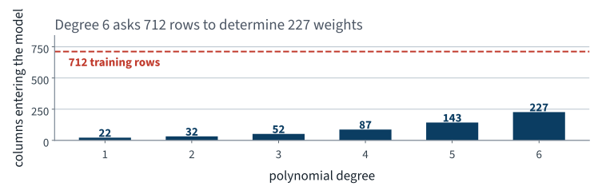
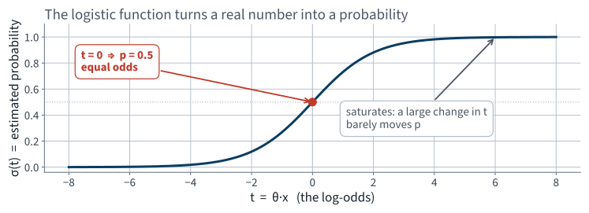
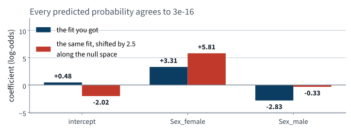
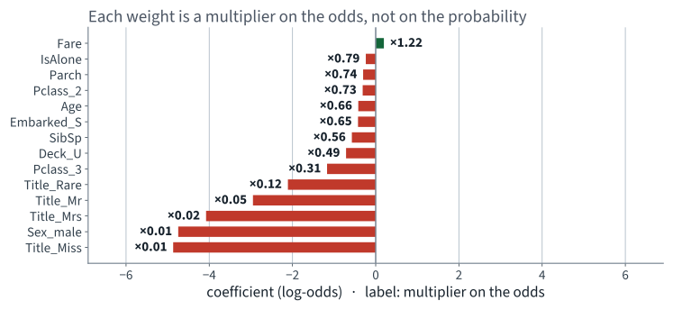
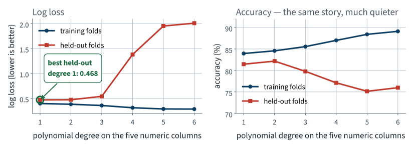
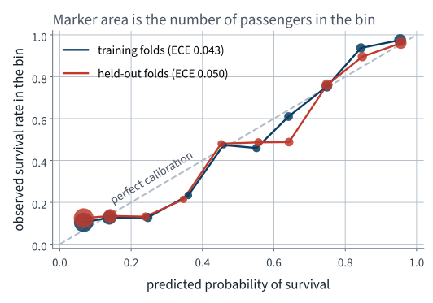

Gradient descent, and the models it fits
Lecture 4 Géron Ch. 4
How a model is fitted, when there is no formula for the answer
Applications of Machine Learning
BSc Mathematics of Artificial Intelligence · Third year
Worked example: the Titanic passenger manifest
Lecture 3 solved least squares in closed form — the
normal equation
$\hat{\boldsymbol\theta} = (\mathbf{X}^{\intercal}\mathbf{X})^{-1}\mathbf{X}^{\intercal}y$,
defined exactly when $\mathbf{X}$ has full column rank — and then
measured a classifier properly: precision, recall, and a threshold chosen
against a stated constraint. Both called .fit() and moved on.
Today we open it, because the closed form runs out:
| Situation | What the normal equation does |
|---|---|
| Many features | inverts an $(n{+}1)\times(n{+}1)$ matrix — cost grows like $n^{3}$ |
| Many instances | forms $\mathbf{X}^{\intercal}\mathbf{X}$, so every row must be seen at once |
| Rank-deficient design | the inverse does not exist |
| A cost that is not squared error | there is no closed form at all |
The last row is the one that matters: the classifier we build today has no formula for its answer, so the answer has to be walked to.
examinable The derivation, and logistic and softmax regression: the model, the log loss, coefficients as log-odds, and why a rank-deficient design leaves the fit without a unique answer. not examinable The Titanic feature engineering.
Measured on one run of this lecture’s notebook; hardware, library versions and random seeds can make a re-run differ slightly.
You have a cost $J(\boldsymbol\theta)$ and no formula for its minimiser.
How do you find one, and how do you know you have?
$m$ instances, $n$ features; $\mathbf{X}$ is $m \times (n{+}1)$ with a leading column of ones, and $\boldsymbol\theta \in \mathbb{R}^{n+1}$ includes the bias. We derive on squared error, the one cost whose minimiser we can also compute in closed form — so the method can be checked:
Why $-\nabla J$: along a unit direction $\mathbf{u}$ the cost changes at rate $\nabla J\cdot\mathbf{u}$, and by Cauchy–Schwarz that is most negative when $\mathbf{u}$ points along $-\nabla J$.
The gradient of the mean squared error
The chain rule on the square gives one partial derivative, $\partial J/\partial\theta_j = \frac{2}{m}\sum_i \bigl(\boldsymbol\theta^{\intercal}\mathbf{x}^{(i)} - y^{(i)}\bigr)x_j^{(i)}$ — error × feature, averaged. That sum is the $j$-th entry of $\mathbf{X}^{\intercal}\mathbf{r}$, with $\mathbf{r} = \mathbf{X}\boldsymbol\theta - y$ the residual vector.
One matrix product over the whole training set. Cost per evaluation: $O(mn)$ — linear in the rows, where the normal equation was cubic in the columns.
Batch gradient descent
Batch, because every step uses the whole training set. Three lines of NumPy, and no matrix is ever inverted.
$\eta$ has units: it converts a gradient into a displacement in parameter space. That is why its right value depends on how the features are scaled — step 5.
Write $H = \nabla^2 J = \frac{2}{m}\mathbf{X}^{\intercal}\mathbf{X}$ and subtract the fixed point $\hat{\boldsymbol\theta}$ ($\nabla J = \mathbf{0}$):
$H$ is symmetric and positive semi-definite ($\mathbf{v}^{\intercal}\mathbf{X}^{\intercal}\mathbf{X}\mathbf{v} = \lVert\mathbf{X}\mathbf{v}\rVert^2 \ge 0$), so it has an orthonormal basis of eigenvectors with $\lambda_i \ge 0$. In that basis $\mathbf{I} - \eta H$ scales component $i$ by $(1 - \eta\lambda_i)$ and mixes nothing, so all decay iff $\lvert 1-\eta\lambda_i\rvert < 1$:
Because $J$ is quadratic the argument is exact, not a local approximation.
Animation| Learning rate | Factor per step | What you see |
|---|---|---|
| $\eta$ far below $2/\lambda_{\max}$ | $1-\eta\lambda_i$ just under 1 | the cost falls, slowly, and is still falling when you stop |
| $\eta \approx 1/\lambda_{\max}$ | small | the cost drops fast and flattens |
| $\eta > 2/\lambda_{\max}$ | $\lvert 1-\eta\lambda_i\rvert > 1$ | the cost rises, oscillates, and overflows to nan |
inf
and a model that predicts one value everywhere. Plot the cost
against the step number; it is the only cheap way to see which of
the three rows you are in.
The step count is governed by the slowest mode. With the best fixed $\eta$, the error contracts per step by a factor
Standardising the columns is not cosmetic. It changes $\kappa$, and $\kappa$ is what sets the number of steps.
Each batch step costs $O(mn)$, which for large $m$ is unaffordable. Draw an index $i$ uniformly at random and use only that row:
Take the expectation over the draw:
The one-instance gradient is an unbiased estimate of the batch gradient.
| The result | What it lets you do today |
|---|---|
| $\nabla J = \frac{2}{m}\mathbf{X}^{\intercal}(\mathbf{X}\boldsymbol\theta - y)$ | fit a linear model without inverting anything |
| $\eta < 2/\lambda_{\max}$ | read a rising cost curve as a step-size fault, not a bug |
| Contraction $(\kappa-1)/(\kappa+1)$ | know that scaling is part of the algorithm, not tidiness |
| Unbiasedness of $\mathbf{g}^{(i)}$ | use mini-batches on data that does not fit in memory |
And one more: only step 2 used the fact that the cost was squared error. Swap the cost, recompute the gradient, and the algorithm is unchanged — which is how the classifier later today is fitted.
| Normal equation / SVD | Gradient descent | |
|---|---|---|
| Cost in $m$ | linear | linear, per step |
| Cost in $n$ | $n^{2.4}$ to $n^{3}$ | linear |
| Out-of-core | no — needs all rows | yes, with mini-batches |
| Scaling required | no | yes |
| Hyperparameters | none | $\eta$, batch size, schedule, stopping rule |
| Other costs | squared error only | any differentiable cost |
When to prefer each. Few features and data that fits in memory: use the closed form, it has no knobs to get wrong. Many features, streaming data, or any cost that is not squared error: descent.
A straight line cannot fit a curve. Add the powers as columns:
Everything derived above still applies unchanged — the gradient, the step-size bound, the case for scaling — because all of them were statements about $\boldsymbol\theta$.
PolynomialFeatures(degree=d) also generates every
cross product, which is how a linear model represents an interaction
such as “third class and travelling alone”. The count is
$\binom{n+d}{d}$ — the number of monomials of degree at most $d$ —
so “a bit more capacity” is never a small change.

Degree 6 on four numeric columns gives the model 227 weights to determine from 712 passengers — about three rows per weight.
Measured on one run of this lecture’s notebook; hardware, library versions and random seeds can make a re-run differ slightly.
| What they asked for | What that forces |
|---|---|
| “how likely” | a probability, not a label |
| the number is used to allocate | it must be calibrated |
| “explain the assignment” | weights a human can read |
“This passenger survives” is not checkable on its own. “This passenger survives with probability 0.31” is: take everyone the model puts near 0.31 and count. That is why requirement 1 is not a formatting preference.
def load_titanic():
tarball = Path("datasets/titanic.tgz")
if not tarball.is_file():
Path("datasets").mkdir(parents=True, exist_ok=True)
url = "https://github.com/ageron/data/raw/main/titanic.tgz"
urllib.request.urlretrieve(url, tarball)
with tarfile.open(tarball) as t:
t.extractall(path="datasets", filter="data")
return pd.read_csv("datasets/titanic/train.csv")
891 passengers, 12 columns — the whole labelled corpus
(the archive’s test.csv has no Survived column,
so we hold out our own test set). To the class, sex, age, fare and family
counts we add four engineered columns: Title from the name
(Mr, Mrs, Miss, Master, Rare), FamilySize = SibSp + Parch + 1,
IsAlone, and Deck — the cabin letter, or
U where none was recorded.
Measured on one run of this lecture’s notebook; hardware, library versions and random seeds can make a re-run differ slightly.
| Outcome | Passengers | Share |
|---|---|---|
| Did not survive | 549 | 61.6% |
| Survived | 342 | 38.4% |
Mildly imbalanced — nothing like the rare-event problem of the previous lecture, where the positive class was one row in ten. Accuracy will not be absurd here.
It will be something more dangerous than absurd: plausible.
Measured on one run of this lecture’s notebook; hardware, library versions and random seeds can make a re-run differ slightly.
X_train, X_test, y_train, y_test = train_test_split(
X, y, test_size=0.2, random_state=42, stratify=y)
assert len(X_train) == 712 and len(X_test) == 179
print(f"train rate {y_train.mean():.4f} test rate {y_test.mean():.4f}")
# train rate 0.3834 test rate 0.3855
Stratified on the label this time, not on a predictor: with 179 test rows an unstratified draw can shift the base rate by several points, and every downstream number moves with it.
712 training passengers. That is a small dataset, and by the end of the lecture the size is doing visible damage.
Measured on one run of this lecture’s notebook; hardware, library versions and random seeds can make a re-run differ slightly.
p = y_train.mean() # 0.3834
majority_accuracy = 1 - p # 0.617
constant_log_loss = -(p*np.log(p) + (1-p)*np.log(1-p))
0.666
The log loss of a model that has learned nothing except the base rate. It is the entropy of the label, in nats, and every number below it has to be compared against it.
Measured on one run of this lecture’s notebook; hardware, library versions and random seeds can make a re-run differ slightly.

$\hat p = \sigma(\boldsymbol\theta^{\intercal}\mathbf{x})$, $\sigma(t) = 1/(1+e^{-t})$: the linear model of least squares, passed through one function. Monotone, so the ranking is the linear model’s; saturating, so beyond about $\lvert t\rvert = 5$ more evidence changes almost nothing.
Invert $\sigma$:
The linear model does not predict the probability. It predicts the log-odds, and the coefficients act on the odds.
Add 1 to $x_j$ and the odds are multiplied by $e^{\theta_j}$, wherever you started. The probability has no such rule — how far it moves depends on where you started.
The log loss, in nats
A scoring rule is proper if the expected score is optimised by reporting your true belief.
# prep: impute; standardise the numbers (step 5); one-hot the categories
clf = LogisticRegression(C=1e6, max_iter=4000) # C=1e6 turns the penalty OFF
model = Pipeline([("prep", prep), ("clf", clf)])
cv = StratifiedKFold(n_splits=10, shuffle=True, random_state=42)
scores = cross_validate(model, X_train, y_train, cv=cv,
scoring=["neg_log_loss", "accuracy", "neg_brier_score"],
return_train_score=True)
StratifiedKFold, not KFold: with
71 passengers per fold, an unstratified split can hand a fold a base rate
several points from the truth.
Scikit-learn regularises logistic regression
by default — C=1.0. We switch it off so
that today’s coefficients are the data’s and not a compromise with a penalty.
Regularisation is the next lecture.
| Model | Log loss | Accuracy |
|---|---|---|
| Report the base rate to everyone | 0.666 | 61.7% |
| Logistic regression, 10-fold cross-validated | 0.496 | 81.5% |
About a quarter below the anchor on log loss, and twenty points of accuracy above the majority class.
Cross-validated, not training. And the per-fold spread of the log loss is 0.22 — larger than any difference this lecture will compare. Read every later gap against it.
Measured on one run of this lecture’s notebook; hardware, library versions and random seeds can make a re-run differ slightly.
Title_Miss at −2.81 — but 70.3% of them survived, against 38.4% overallTitle_Mrs at −2.02 — the highest-surviving group in the dataDeck_T is the largest weight in the model — and there is exactly one passenger on deck TThese are not weak effects or noisy estimates. They have the wrong sign, and the model’s predictions are nonetheless good.
Before reaching for a story about confounding, ask the cheaper question: what is the shape of the design matrix?
Measured on one run of this lecture’s notebook; hardware, library versions and random seeds can make a re-run differ slightly.
Z = model[:-1].transform(X_train)
Z_b = np.c_[np.ones(len(Z)), Z] # add the intercept column
print("columns:", Z_b.shape[1]) # 29
print("rank: ", np.linalg.matrix_rank(Z_b)) # 23
print("cond: ", np.linalg.cond(Z_b)) # 4.75e+16
Six columns of the design matrix are linear combinations of the others.
FamilySize = SibSp + Parch + 1
exactly, for every passenger: an identity, not a correlation
Add 2.5 to Sex_female and to
Sex_male, subtract 2.5 from the intercept: the two columns sum to
the intercept’s, so every prediction is unchanged. The minimiser is not
unique, and the solver returns one point of a whole family of them.
A coefficient that can be moved without changing any
prediction is not a property of the data.
NUM = ["Age", "Fare", "SibSp", "Parch"] # FamilySize removed
("cat", make_pipeline(SimpleImputer(strategy="most_frequent"),
OneHotEncoder(drop="first", min_frequency=2,
handle_unknown="infrequent_if_exist")), CAT),
| Design matrix | Columns | Rank | Condition number |
|---|---|---|---|
| As first written | 29 | 23 | 4.75e+16 |
| One level dropped, FamilySize removed | 23 | 23 | 83.6 |
Fourteen orders of magnitude. IsAlone stays: it
is an indicator, not a linear function of the counts.
Measured on one run of this lecture’s notebook; hardware, library versions and random seeds can make a re-run differ slightly.

Each bar is a log-odds. The label beside it is what the odds get multiplied by.
Pclass_3 = −1.169
“Holding every other recorded feature fixed, travelling third class
multiplies the odds of survival by $e^{-1.169} = 0.31$, relative to
first class.”
drop="first" removed, here first class — alwaysUnique is not the same as stable:
Sex and Title still carry much of the same
information, so how the effect is split between them moves with the sample.
We only fixed uniqueness.
Polynomial features on the four numeric columns only, degrees 1 to 6, the same ten folds:
| Degree | Columns | Training log loss | Held-out log loss | Held-out accuracy |
|---|---|---|---|---|
| 1 | 22 | 0.395 | 0.468 | 81.5% |
| 2 | 32 | 0.381 | 0.471 | 82.2% |
| 3 | 52 | 0.355 | 0.539 | 79.8% |
| 4 | 87 | 0.310 | 1.380 | 77.1% |
| 5 | 143 | 0.286 | 1.952 | 75.1% |
| 6 | 227 | 0.284 | 2.009 | 76.0% |
Degrees 1 and 2 differ by 0.003 in held-out log loss, and their fold-to-fold spread, 0.13, is 52 times that. Those two are a tie, and the curve turns after degree 2. Crowning either one — degree 1 has the lower mean — would be reporting noise.
Measured on one run of this lecture’s notebook; hardware, library versions and random seeds can make a re-run differ slightly.

The training curve never stops improving. The held-out curve is flat across degrees 1 and 2, turns after degree 2 and then falls off a cliff.
From degree 2 to degree 5, held-out accuracy falls by 7.0 points. Held-out log loss is multiplied by more than four.
The requirement was for probabilities. The metric that matches the requirement is the metric that saw the damage.
Take every passenger the model scored near $q$. The fraction who actually survived should be about $q$.
This is a property of a set of predictions, not of any one prediction. You cannot check it on a single passenger, which is exactly why it is so easy to ship a model that fails it.

Out of fold — every probability from a fit that never saw that passenger. Close to the diagonal in the bins that hold most of the passengers: the two ends, where the model is confident.
.predict() is .predict_proba() >= 0.5.predict() silently applies a cut-off of 0.5, which is
cost-optimal only when the two mistakes cost the same. Nothing in the code
mentions 0.5. Nothing errors. The accuracy printed is true, and it answers a
question the stakeholder did not ask.
Lecture 3 chose an operating point against a stated constraint and defended it. The same discipline applies here, with one addition: the model produces the probability, and the cut-off is a separate decision taken on top of it.
One parameter vector per class. Score each class, then normalise:
Every $\hat p_k > 0$ and they sum to 1 by construction, so the output is a distribution over the $K$ classes without any further work.
Multiclass, not multilabel: softmax assigns one class per instance. Four objects in one photograph need $K$ separate binary classifiers, not this.
$y_k^{(i)}$ is 1 if instance $i$ belongs to class $k$ and 0 otherwise, so the inner sum keeps exactly one term: the log of the probability given to the true class.
At $K = 2$ this is the log loss, term for term. Logistic regression is the two-class case of softmax, not a different model.
AnimationETA_DIVERGE in the learning-rate cell and watch where the
cost first becomes inf. Then compute
$2/\lambda_{\max}$ for that design matrix and check the two agree.
.predict() is a cut-off nobody choseNot presented — for afterwards
five, in the style of the written paper
Solutions on Lecture 5’s deck.
Pclass_3 is $-1.169$. State what it multiplies, by how much, and why no single change in the survival probability follows from it. [4]Solutions on Lecture 5’s deck.
The five set at the end of Lecture 3
not part of this lecture
1. The normal equation is $\hat\theta = (X^{\mathsf T}X)^{-1}X^{\mathsf T}y$. Your training matrix $X$ has a…
$X^{\mathsf T}X$ is singular; the pseudoinverse returns the minimum-norm least-squares solution.
2. A pipeline scales the features and then fits a model, and is passed whole to cross_val_score. Explain what…
The scaler would be fitted on every fold’s validation rows, so each fold’s score could be optimistic — by an amount the code cannot tell you.
3. On the MNIST 5-detector, a classifier that never fires scores $90.96\%$ accuracy on the training set. State…
The share of the data that is not a 5.
4. Prove or disprove: as the decision threshold is lowered, precision increases monotonically.
Disprove — precision is not monotone in the threshold.
5. Two models have the same ROC AUC. One is far better on a precision–recall curve. What does that tell…
The positive class is rare.
Next lecture
Why the held-out curve turned upward after degree 2, decomposed into three terms — and the one penalty term that gives a fit like today’s rank-deficient one a unique answer